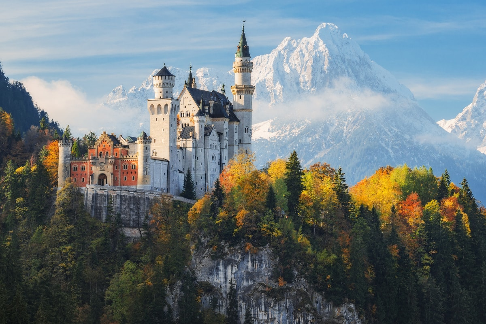
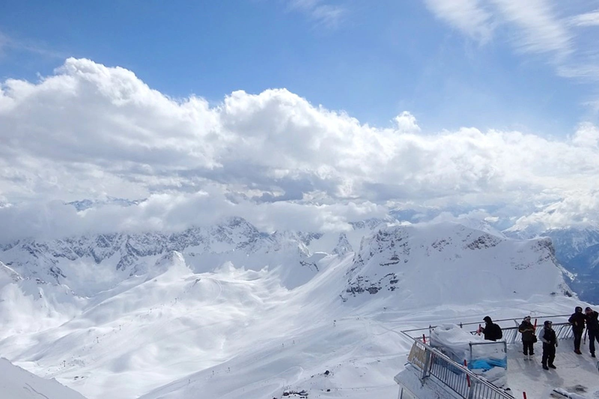
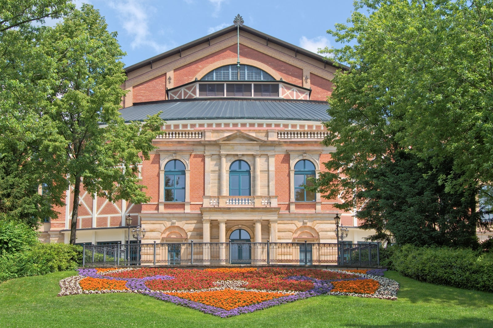
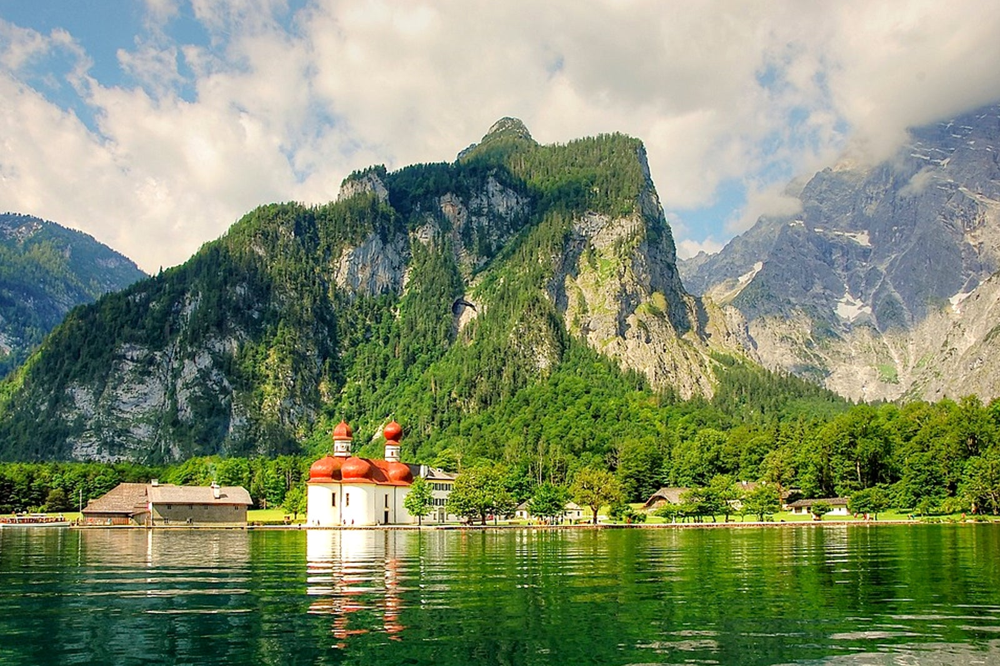
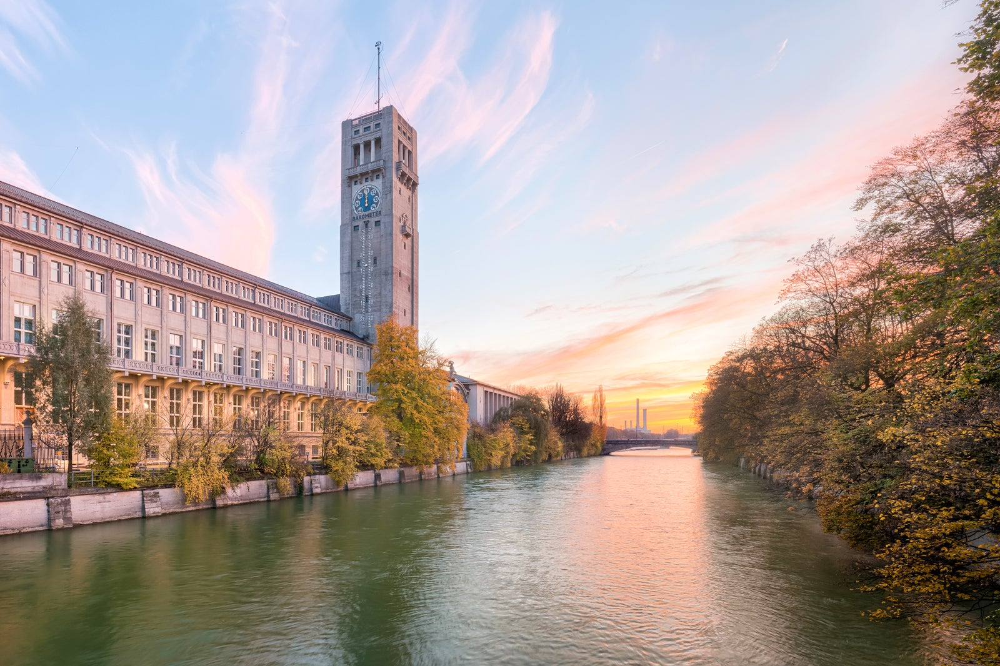

La maravilla...
Baviera es un estado del sureste alemán que limita con Liechtenstein, Austria y la República Checa. La capital estatal es Múnich, famosa por su festival anual de la cerveza Oktoberfest, los museos de arte y el decorado palacio de Nymphenburg. El recorrido turístico llamado "Ruta romántica" comienza al noroeste de Wurzburgo, serpentea hacia el sur a través de villas rurales y ciudades medievales, y termina en las laderas de los Alpes cerca de la frontera sur de Alemania.
Actividades y atracciones del lugar.
1 Castillo Neuschwanstein
La fuente de inspiración del parque temático de Disney.Tras invertir su fortuna personal y recurrir a numerosos préstamos, el rey Luis II de Baviera hizo realidad su sueño de construir el castillo de Neuschwanstein.
2El Zugspitze
n paraíso invernal en la montaña más alta de Alemania Con sus casi 3000 metros sobre el nivel del mar, el Zugspitze es la montaña más alta de Alemania. Además, alberga la estación de esquí a mayor altura del país.
3 Festival de Bayreuth
Un festival de ópera en honor a un emblemático compositor alemán.Todos los veranos, miles de aficionados a Wagner de todo el mundo acuden a la ciudad con motivo de estos festejos, que duran todo un mes.
4 Lago Königssee
Senderismo y paseos en bote en un imponente entorno natural El lago natural de Königssee se considera el más limpio de Alemania y es el tercero más profundo del país. Se encuentra en los Alpes de Berchtesgaden, cerca de la frontera con Austria.
5 Deutsches Museum
Experiencias interactivas en un enorme museo de ciencias. El Deutsches Museum es un museo de ciencias y tecnología que presume de enfocar el aprendizaje en sus exposiciones, centradas en temas tan diversos como astronomía o biología marina.
Comidas que debes probar si visitas el lugar
No nos podía faltar un repaso por los principales platos típicos de Baviera. Os lo decimos siempre. Una de nuestras aficiones preferidas es la de degustar todos los platos tradicionales de cualquier región. Y si Baviera se cruza en nuestro camino, no podemos dejar pasar la oportunidad de “navegar” por una de las cocinas mas reconfortantes de la gastronomía mundial.
Gulaschsuppe

Leberknödelsuppe
Bretzel
Apfelstrudel

Apfelauflauf
Spätzle